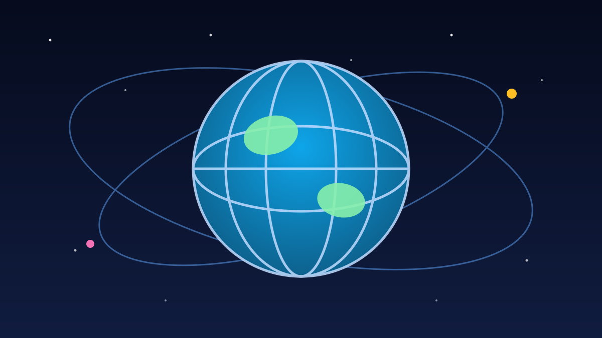

1 / 6

🌍 DUNIA
Ukraina Cari Pegangan Baru di Brussels
Di saat hubungan Kyiv-Washington memanas, Eropa unjuk gigi jadi penopang utama. Geser buat spill lengkapnya →
2 / 6
🤝
Zelenskyy Jadi Tamu Istimewa di KTT Brussels
Presiden Ukraina Volodymyr Zelenskyy hadir sebagai tamu undangan khusus dalam pembukaan KTT Uni Eropa di Brussels, Jumat (16/10/2026).
Ia datang dengan dua permintaan utama: lebih banyak dana untuk pertahanan Kyiv dan sanksi baru terhadap Rusia. Presiden Dewan Eropa António Costa menegaskan dukungan Uni Eropa tetap sekuat sebelumnya.
3 / 6
❄️
Paket Musim Dingin Jadi Agenda Utama
Topik utama pertemuan itu adalah persiapan menghadapi musim dingin: energi, pertahanan udara, dan pendanaan untuk sisa 2026 hingga 2027.
Zelenskyy menyebut paket musim dingin bukan cuma soal ekonomi, tapi juga pertahanan udara dan dukungan finansial. Presiden Komisi Eropa Ursula von der Leyen menargetkan dua klaster negosiasi terakhir keanggotaan Uni Eropa untuk Ukraina dibuka sebelum akhir tahun.
4 / 6
😤
Trump Kecam Serangan ke Kilang Minyak Rusia
Di sisi lain, Presiden AS Donald Trump menyebut serangan Ukraina ke kilang-kilang minyak Rusia sebagai “aib” dalam wawancara dengan Newsmax, karena menurutnya serangan itu menaikkan harga minyak dunia.
Pekan sebelumnya, Trump mengumumkan bahwa Ukraina dan Rusia sepakat tidak saling menyerang fasilitas energi. Zelenskyy kemudian menyatakan Kyiv meninggalkan gencatan senjata energi itu, dan Ukraina menyerang sebuah kilang minyak di tenggara Moskow.
5 / 6
⚖️
Eropa: Tekan Agresor, Bukan Korban
Kepala kebijakan luar negeri Uni Eropa Kaja Kallas menegaskan Eropa punya pendekatan berbeda: menekan agresor agar menghentikan perang, bukan menekan korban untuk menyerah.
Kekhawatiran juga muncul soal kemungkinan AS mengurangi berbagi intelijen dan dukungan senjata untuk Kyiv. Di tengah situasi itu, Zelenskyy juga bertemu Sekjen NATO Mark Rutte, Presiden Prancis Emmanuel Macron, serta para pemimpin Polandia, Denmark, dan Belgia.
6 / 6
🤔
Efeknya ke lo apa?
Perang yang jauh di sana masih nyambung ke dompet lo: kalau harga minyak dunia goyang gara-gara kilang diserang, ujung-ujungnya bisa nyenggol harga BBM, ongkir, sampai harga barang-barang impor.
Plus, drama Kyiv–Washington–Brussels ini nunjukin satu hal: aliansi politik bisa berubah cepat. Yang kemarin sekutu dekat, hari ini bisa beda kubu — dan negara-negara lain langsung hitung ulang posisinya.